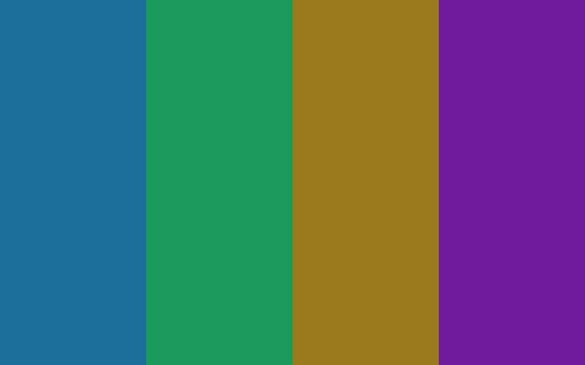
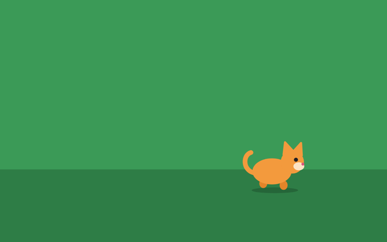

WigglePlay
WigglePlay
Free games built for disabled children to play through movement. The camera watches, and the screen answers with gentle colour and sound. No touch, switches or controllers needed.
Pick a game
-

Musical Colours
Any movement fills the screen with slowly blending colour and soft music.
Play -

Walking Animals
Look left or right and a friendly animal walks that way. Close your eyes and it falls asleep.
Play
How to start
- Pick a game and allow the camera.
- Stand the screen in front of your child.
- Press Start and stay with them while they play.
Gentle and private
- Colour and sound only fade and blend. Nothing flashes.
- You set the limits for brightness, volume and session length.
- Video stays on your device. Nothing is recorded or sent.
Ask for a game, or build one
Want to work on this together? That would be great. Email moeghaf@gmail.com or open an issue on GitHub to say hello, or to ask for a specific game to be built for your child. You could even try vibe coding a game yourself. It is very easy to do.